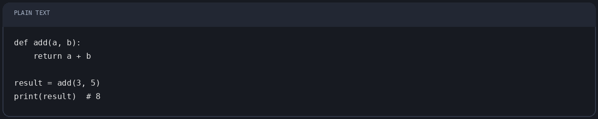
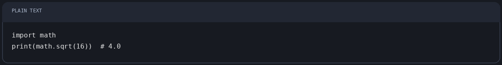
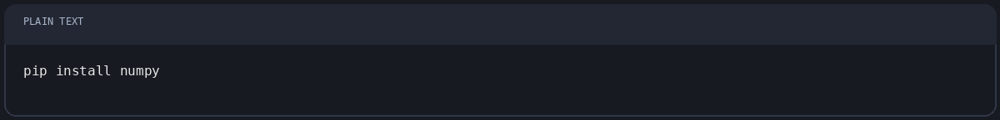
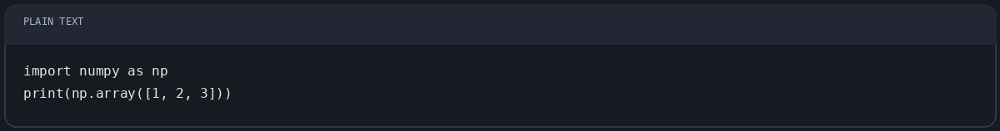
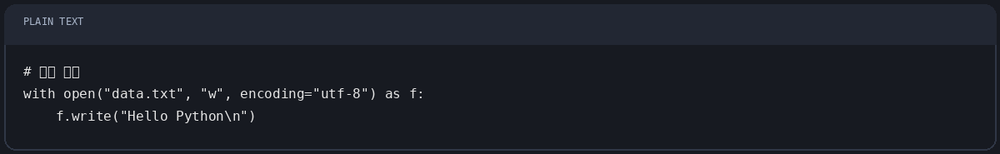
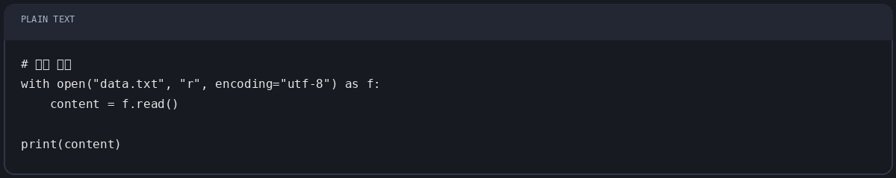

📚 2주차 Python 기초&심화 문법 (2026.10.15 Thu ~ 2026.10.20 Tue)
Total : 4 days
📕 C. Function, Module & File I/O (2026.10.19 Mon)
📃 a. Function (함수)
- Function : 특정 작업을 수행하도록 코드를 묶어 놓은 기능
def로 정의하고, 필요할 때 호출하여 재사용- Parameter(매개변수) : 함수에 전달받는 값을 저장하는 변수
- Return(반환값) : 함수 실행 결과를 호출한 곳으로 돌려주는 값

def: 함수 정의return: 결과 반환- 기본값을 지정하거나 여러 값을 반환할 수도 있음
📃 b. Module & Library (모듈과 라이브러리)
- Module : Python 코드가 작성된 하나의
.py파일 - Library : 특정 기능을 활용할 수 있도록 모아 놓은 코드와 도구
import로 모듈을 불러와 기능 사용- 표준 라이브러리는 Python 설치 시 기본 제공되며, 외부 라이브러리는 별도 설치가 필요할 수 있음

외부 라이브러리 설치 예시


math: 수학 관련 기능numpy: 배열 및 수치 계산as np: 라이브러리에 별칭 지정
📃 c. File I/O (파일 입출력)
- File I/O : 파일에서 데이터를 읽거나 파일에 데이터를 저장하는 작업
open()으로 파일을 열고with를 사용해 작업이 끝나면 자동으로 파일을 닫음- 주요 모드:
r(읽기),w(쓰기·덮어쓰기),a(내용 추가)


| 메서드 | 기능 |
|---|---|
read() | 전체 내용 읽기 |
readline() | 한 줄 읽기 |
readlines() | 모든 줄을 리스트로 읽기 |
write() | 문자열 쓰기 |
※ w 모드는 기존 파일 내용을 덮어쓰므로 주의합니다.
💡 핵심 요약
- Function : 코드를 기능별로 나누어 재사용
- Module & Library : 다른 파일이나 라이브러리의 기능 활용
- File I/O : 파일 읽기·쓰기·추가를 통한 데이터 관리
🎯 학습 목표: 함수를 정의하고 모듈을 활용하며, 파일 입출력을 통해 데이터를 저장하고 불러올 수 있다.